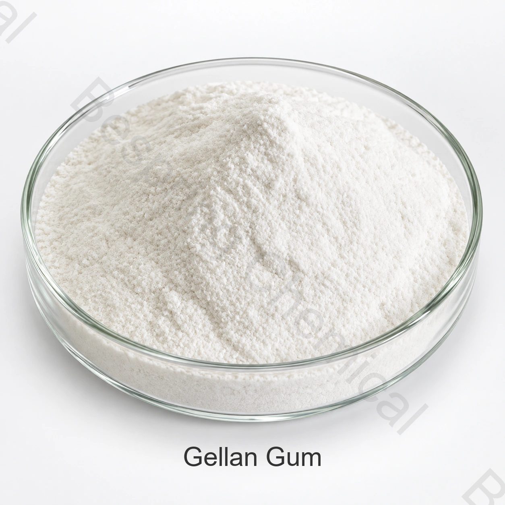

Food grade gellan gum supplier
For supplier qualification, specify low or high acyl, gel-strength method, particle size, microbiological limits and required certificates.
Food grade ingredient · Hydrocolloid, gelling agent and stabilizer · E418
Food grade gellan gum is a fermentation-derived hydrocolloid supplied in low-acyl and high-acyl grades for suspension, gel formation and texture control.
Share the application, critical limits, test methods, quantity, packing and destination.

Direct product answer
Food grade gellan gum is a high-molecular-weight polysaccharide produced by controlled fermentation. Low-acyl grades generally build firmer, more brittle gels, while high-acyl grades generally provide softer, more elastic texture. Final performance depends on grade, ions, solids, pH and process.
Commercial suitability depends on the exact grade, source, test method, intended function and destination-market rules. The current signed specification and batch COA govern each transaction.
Procurement checklist
Use these qualification points when comparing a China supplier, manufacturer source, distributor offer, bulk quote or sample.
For supplier qualification, specify low or high acyl, gel-strength method, particle size, microbiological limits and required certificates.
Low-acyl and high-acyl grades are not interchangeable; define the target texture, suspension need and ion system.
Ask for suspension testing in the actual acidic juice, plant-protein drink or mineral-containing beverage.
Include annual volume, 25 kg packing preference, pallet requirement, destination port and sample or pilot-trial needs.
Application screening
These are formulation areas rather than universal approvals or dosage recommendations. Confirm legal use and performance in the complete finished food.
Supports long-term suspension and visual stability when the grade and activation system are correctly selected.
Helps suspend minerals, fiber or cocoa while managing separation and drinking texture.
Can form stable gels in reduced-sugar concepts after pH, solids and ion trials.
Provides suspension, structure or elastic texture in compatible milk and dessert systems.
Low- and high-acyl options enable different firmness, elasticity and release profiles.
Adds body and stability with low use levels after formulation validation.
Supplied technical data
The table reproduces the supplied attachment for procurement screening. It is not a batch COA or a statement of universal regulatory limits.
| Test item | Low Acyl Gellan Gum | High Acyl Gellan Gum |
|---|---|---|
| Appearance | Off-white powder | Off-white powder |
| Purity | 85.0-108.0% | 85.0-108.0% |
| pH | 5.0-8.0 | 5.0-8.0 |
| Suspending ability | Passes | Passes |
| Gel strength | ≥850 g/cm² | ≥400 g/cm² |
| Isopropanol | ≤750 mg/kg | ≤750 mg/kg |
| Identification test | Passes | Passes |
| Loss on drying | ≤15.0% | ≤15.0% |
| 60 mesh sieve pass rate | ≥92% | ≥92% |
| Lead (as Pb) | ≤2 mg/kg | ≤2 mg/kg |
| Heavy metals (as Pb) | ≤20 mg/kg | ≤20 mg/kg |
| Arsenic (As) | ≤2 mg/kg | ≤2 mg/kg |
| Cadmium | ≤1 mg/kg | ≤1 mg/kg |
| Total mercury (Hg) | ≤1 mg/kg | ≤1 mg/kg |
| Total plate count | ≤10,000 CFU/g | ≤10,000 CFU/g |
| Mold and yeast | ≤400 CFU/g | ≤400 CFU/g |
| Coliforms | ≤30 MPN/100 g | ≤30 MPN/100 g |
| Salmonella | Not detected in 10 g | Not detected in 10 g |
Specification note: The supplied sheet states “purity 85.0-108.0%,” while the JECFA identity assay is expressed through carbon-dioxide yield. Confirm what this commercial purity value measures, the test method, and the acyl form on the signed specification. The attachment’s C40H68O38 “monomer” notation should not be treated as a fixed molecular formula for this variable polymer.
Technical selection
Choose low acyl for firmer/brittle gel behavior or high acyl for softer/elastic texture, then validate in the real formula.
Share calcium, sodium, potassium, pH, soluble solids and heat-process conditions.
Align gel-strength, suspension and hydration tests before comparing samples.
Confirm residual solvent, metals and microbiological limits for the destination market.
Qualification support
Request the current signed specification or TDS, SDS, test methods and representative or batch COA.
Verify applicable Kosher, Halal, ISO and food-safety documents for the exact grade, source and manufacturing site.
Review the FAO/JECFA gellan gum specification for identity context, then apply destination-market rules separately.
Storage and handling
Buyer questions
Gellan Gum is used in selected food formulations for hydrocolloid, gelling agent and stabilizer functions. Suitability, legal use and dosage must be confirmed for the exact finished food and destination market.
Gellan Gum is identified by CAS 71010-52-1 and INS 418; current Codex GSFA lists 418(i). Confirm the exact supplied grade and current market rules.
The supplied reference minimum order quantity is 500 kg. Sample, trial and commercial availability should be confirmed for the selected grade.
The supplied reference packing is 25 kg bag with PE liner; drum or customer-requested outer packing. Confirm liner, pallet, marks and container loading in the quotation.
Provide the food application, target specification and test methods, quantity, particle or grade preference, destination, pallet requirements, certificates and requested delivery date.
Last reviewed 2026-07-25 by Bespring Chemical technical and export team.
Related ingredients
Review identity, specification, applications and sourcing considerations.
Review identity, specification, applications and sourcing considerations.
Review identity, specification, applications and sourcing considerations.
Specification-led sourcing
Share the application, target grade and limits, quantity, packing, destination and required documents for a relevant bulk-supply proposal.